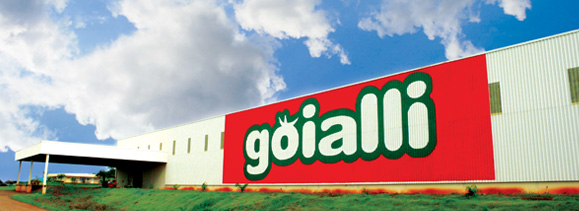

 A Goialli é o resultado da união de pessoas empreendedoras e está localizada numa região com grande vocação agrícola: o Centro-oeste brasileiro. Nossa história começou
na cidade de Goianésia, Goiás, no ano de 2000.
A Goialli é uma empresa de alimentos, que surgiu a partir de gente de tradição no plantio de tomate na região. Iniciamos operando com produtos derivados de tomates e posteriormente incluímos conservas de vegetais, utilizando tecnologia
de última geração, com foco na qualidade. Nosso objetivo é simples: oferecer alimento para uma vida melhor.
Nosso parque industrial encontra-se na cidade de Goianésia, às margens da rodovia GO-080, km 61, Zona Rural. Reunimos profissionais diferenciados para todas as etapas da produção: plantio, colheita, seleção, processamento, pesquisa,
engenharia, comercialização, marketing e logística. A GOIALLI escolheu a melhor região e as melhores condições climáticas para o desenvolvimento de seus produtos.
Utilizamos matéria-prima selecionada e, por tudo isso, nos orgulhamos de levar até nosso consumidor produtos de qualidade superior, que rendem e que tornam os pratos mais saborosos do que nunca.
A Goialli é o resultado da união de pessoas empreendedoras e está localizada numa região com grande vocação agrícola: o Centro-oeste brasileiro. Nossa história começou
na cidade de Goianésia, Goiás, no ano de 2000.
A Goialli surgiu no mercado do agronegócio com a proposta de agregação de valor à economia local. Sendo, hoje, composta por uma equipe com cerca de 240 colaboradores.
A Goiás Alimentos S/A é uma empresa de capital fechado, constituído por ações ordinárias nominativas com direito a voto, sem valor nominal, não-negociáveis em bolsa. Portanto, não possui registro de companhia aberta, concedido pela
Comissão de Valores Mobiliários – CVM, dessa forma não atua no mercado de capitais tradicionalmente reconhecido.
Apesar disso, a credibilidade empreendedora de seus idealizadores e a oportunidade de investimento para uma região agrícola promissora fez com que o conceito de empresa aberta fosse adotado e logra-se total êxito.
A Goialli tem um perfil inconfundível: boa localização, pessoas empreendedoras e surgiu no momento em que o agronegócio alavancava a economia do país. Além disso, investiu e investe em eventos que propiciam a seus colaboradores um aperfeiçoamento contínuo na prática da excelência dos serviços prestados.
Faz parte do lema desta empresa proporcionar total satisfação aos seus clientes, externos e internos, encantando-os sempre e, para isso, conta com uma equipe dinâmica, estimulada a participar ativamente de todas as iniciativas que agilizem
a conquista dos objetivos da empresa.
A Goialli é o resultado da união de pessoas empreendedoras e está localizada numa região com grande vocação agrícola: o Centro-oeste brasileiro. Nossa história começou
na cidade de Goianésia, Goiás, no ano de 2000.
O processo de produção da Goialli está projetado dentro dos melhores conceitos industriais existentes no mundo, estando a empresa preparada em qualidade e tecnologia de processos para concorrer nos principais
mercados mundiais.
O sistema de co-geração de energia projetado para a indústria, utilizando como combustível o bagaço da cana,faz da Goiás Alimentos uma das mais modernas e eficientes do setor no Brasil. Os benefícios
se dão tanto em sua eficiência operacional, que leva a menores custos de produção, quanto no aproveitamento de resíduos de produção disponibilizados por indústrias de álcool locais.
A empresa tem grande preocupação com o meio-ambiente: os resíduos industriais são consumidos como adubo na irrigação de áreas cultivadas nas proximidades e como ração animal. A empresa também possui um sistema de tratamento e reaproveitamento
de água – Estação de Tratamento de Água (ETA).
A capacidade de agregação de valor da indústria de derivados de tomates fez com que a empresa se tornasse um importante pólo econômico do município de Goianésia. A Goialli contribui para a geração de empregos e renda, a geração de impostos e o crescimento da economia local,
uma vez que a grande maioria dos empreendedores e acionistas reside no município e tem direta ligação com a região.
Faz parte do lema desta empresa proporcionar total satisfação aos seus clientes, externos e internos, encantando-os sempre e, para isso, conta com uma equipe dinâmica, estimulada a participar ativamente de todas as iniciativas que agilizem
a conquista dos objetivos da empresa.
A Goialli é o resultado da união de pessoas empreendedoras e está localizada numa região com grande vocação agrícola: o Centro-oeste brasileiro. Nossa história começou
na cidade de Goianésia, Goiás, no ano de 2000.
Oferecer produtos alimentícios de qualidade observando os aspectos legais, ambientais, éticos e sociais, tendo a satisfação do cliente como fator de sucesso.
A Goialli é o resultado da união de pessoas empreendedoras e está localizada numa região com grande vocação agrícola: o Centro-oeste brasileiro. Nossa história começou
na cidade de Goianésia, Goiás, no ano de 2000.
Ser reconhecida no mercado nacional até 2020, tendo como princípio a excelência na qualidade dos produtos e serviços prestados.